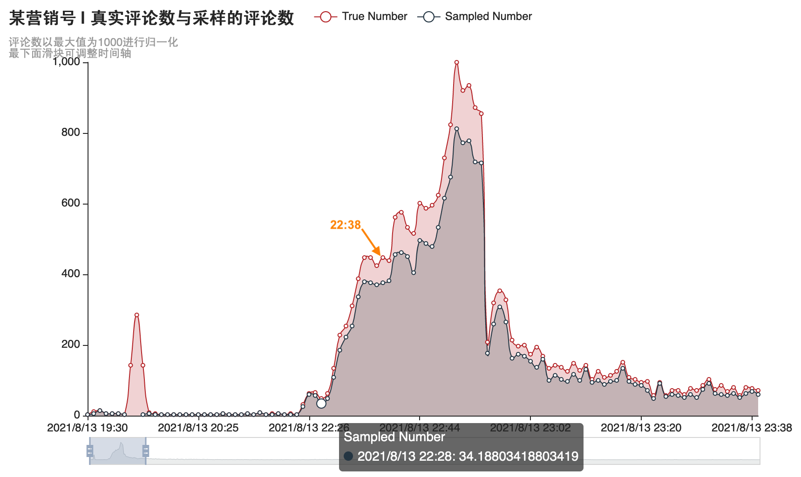

- TIPS: 移动端请下滑界面，会出现导航栏。左上角可进入目录和选择模版。
数据汇总 | 事件相关异常热搜数据汇总
一、数据来源
有专门记录热搜数据的网站，可以查阅当天热搜的热度数据。不同网站的记录结果也可以相互印证。三个有价值的来源网站总结如下：
- 【热搜时光机】
- 可以选择时间，追溯回任意时刻的热搜榜，并记录了全程热搜数据。
- https://www.weibotop.cn/2.0/
- 【微博历史热搜数据】
- 可以搜索热搜记录，并有全程数据记录变化。
- https://weibo.zhaoyizhe.com/
- 【热搜神器】
- 上面两个只能查热搜主榜，这个额外可以查娱乐榜及抖音等热搜，缺点是仅有在榜时间，没有提供全程数据。
- https://www.enlightent.cn/research/rank/weiboSearchRank
二、异常热搜汇总
下述汇总表中「仅为」「明显」能看出来异常的热搜。
| 编号 | 热搜名称 | 备注 | |
|---|---|---|---|
| 1 | #张哲瀚妈妈 艺考考官# | 0812预热 | |
| 2 | #张哲瀚坐苏小小墓上拍照# | 0813水军联动 -- 典型的操纵热搜，结合了央视新闻的评论热度等进行分析 | |
| 3 | #张哲瀚 书单# | 以下为0813当日 | |
| 4 | #张哲瀚道歉# | ||
| 5 | #思想火炬评张哲瀚事件# | ||
| 6 | #人民日报评张哲瀚道歉# | ||
| 7 | #日本防卫大臣岸信夫参拜靖国神社# | ||
| 8 | #张哲瀚微博和张哲瀚工作室被禁言# | 以下为0813后续 | |
| 9 | #微博管理员回应张哲瀚事件# | ||
| 10 | #张哲瀚作品 下架# | ||
| 11 | #张哲瀚被中演协进行从业抵制# | ||
| 12 | #中网工委就张哲瀚事件发声# | ||
| 13 | #张哲瀚抖音账号 封禁# | ||
| 14 | #张哲瀚粉丝后援会清空微博# | ||
| 15 | #日本封国#和"中演协回应"相关的3个话题 | 1201引导舆论 -- 12月1日，人工制造#日本封国#的“爆”，控制热搜，转移公众注意力 |
先放下正常的热搜曲线，以免看多了下面的异常数据，就不知道正常的热搜曲线应该长什么样了。类似的"正常"曲线均可以在上一节提到的各种热搜数据网站中观察到。
{kind=link}
{kind=link}
（一）0812预热--#张哲瀚妈妈 艺考考官
（二）水军联动--#张哲瀚坐苏小小墓上拍照
同《异常流量分析报告》。
{kind=link}
22:38，为何央视新闻中的水军热度突然飞快退去，以至于出现了一个明显的"坑"？
初步猜想可能是由于一部分水军被新的任务吸引，于是编者check了当晚的热搜数据，发现几乎同一时刻#张哲瀚坐苏小小墓上拍照#热搜热度开始迅速攀升。
- 当日19:29，某营销号就已发布相关微博 https://m.weibo.cn/detail/4669815195959771 ，但是热度很低，评论不足300条。为什么突然这个微博得到大量热度，最终获得3万评论，成为该词条下热门？
- 关于时间线的猜测总结
- 22:28时，发布于19:29、热度早已退去的营销号文章突然开始得到大量水军转赞评。有人通过引导水军转赞评营销号微博、水军发布相关内容、刷搜索量等方式，将此话题冲上热搜榜。通过热搜时光机回溯，此时该热搜为热搜榜47位。
- 22:28至22:38，在水军的大力运作下，该话题从热搜榜第47位迅速上升至第11位。
- 22:38起，由于话题热度还不够"爆"，进一步加大投入力度，乃至央视评论区的水军撤出，转来冲击该话题热度。
- 从22:47到22:48，一分钟之内该话题热度骤升30w，在热搜数据图中拉出了一个陡峭的上升段，终于"成功"占据热搜榜首。
- 22:57，话题热度达到峰值，水军退去。此后，该话题热度迅速降低。
- 相关时段开始发帖、评论或者转赞的账号，可能大比例为水军账号。刷数据的人员可能有不止一个账号，因此未必与央视评论区账号相同，但是有关部门应当有条件获得这些账号的ip地址，可以判断出哪些账号为同一人使用。

- 
{kind=link}
（三）0813当天--异常热搜汇总
（四）0813后续--封禁热搜汇总
（五）1201--利用#日本封国#模糊中演协事件焦点
12月1日，中演协对网络质疑做出了非正式回应，分为三个话题登上热搜。但是于此同时，有人强行加热#日本封国#这个热搜，使其成为热搜榜首的"爆"，控制舆论，转移公众注意力。
话题#日本封国#相关新闻是前一天晚上的，已经没有热度了，被再次翻出来。并且截图所示该话题的阅读、讨论和原创都远不如中演协相关话题，却强行被刷到热搜榜首，而且是深红色的爆。相关新闻下，不明真相的网友很多都在诧异，为什么这个新闻都能爆。